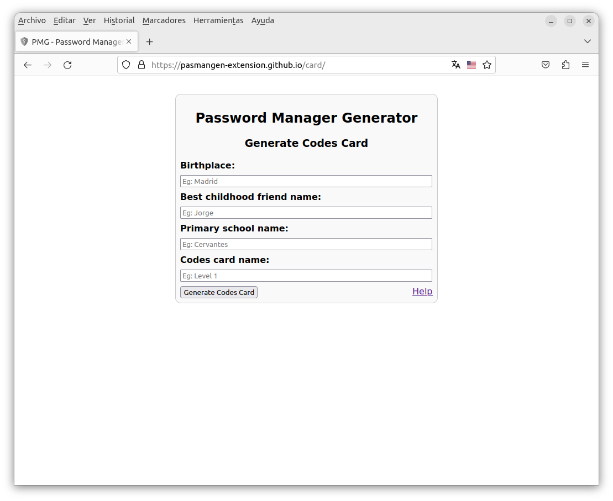
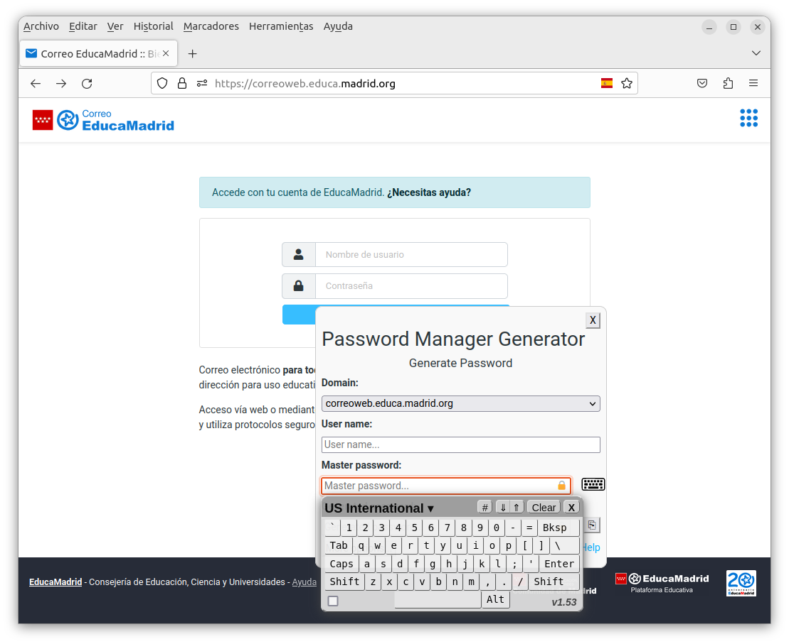

Password Manager Generator
Help
To generate strong passwords there are several methods. We can use for example a encrypted databases as KeepPass. Or we can also use PMG, another method for generating strong passwords. Now we will explain its characteristics, how it works, and how to use it.
- How PMG works?
- How to use PMG?
- Advanced options
- How to use a codes card?
- How to generate a codes card?
- How to generate a user name?
- What data does PMG save?
- PMG features
- PMG limitations
- PMG code
How PMG works?
PMG use the domain, the user name and a master password to generate a hash to use as the password for your account. May be this is not understood very well, but using the plugin is best way to understand how PMG works.
How to use PMG?
PMG is activated in a web site with a login form.
When the user click on the password field, a popover is displayed.

Now the user selects the subdomain, fills in the user name and the master password. A hash is then generated (always the same for the same subdomain, the same user name and the same master password) which is going to be the password for the account. Automatically the plugin fills in the user name and password on the login form of the web site.
Advanced options
If the 'More options' button is clicked, a several advanced options are displayed.
The user can change:
- The length of the generated password.
- If the password must have uppercase characters.
- If the password must have lowercase characters.
- If the password must have special characters.
- If the password must have number characters.
How to use a codes card?
This is not requires, although to increase the security the user can use a codes card.
PMG will ask for the code of a card cell number. The number of the card cell will be always the same for the same domain and the same user name.
The codes card must be previously generated.
How to generate a codes card?
To generate the codes card the user can use the provided web page.
The user must fill in the fields (birthplace, best childhood friend name, primary school name, codes card name).
A hash is then generated (always the same for the same place of birth, the same childhood best friend name, the same primary school name and the same code card name) to be splited to the codes card cells.
To improve usability, the codes card can be printed.
How to generate a user name?
This is not requires, although to increase the security the user can generate a user name. It will be always the same for the same subdomain and the same primary user name.
How to use a virtual keyboard?
This is not requires, although to increase the security the user can use virtual keyboard to avoid keyloggers in the master password and in the code of the codes card. When the user click on this fields the virtual keyboar is displayed.
What data does PMG save?
To improve the usability the plugin store some data (but never the master password, the generated password or the code of the codes card cell) always in the navigator local storage (never in the cloud) and in the future the data is recovery to go faster.
PMG features
- PMG generates robust and different passwords for each of your accounts.
- PMG only forces you to remember one master password.
- PMG can increase your security by using a codes card.
- PMG can increase your security by generating user names.
- PMG can increase your security by using a virtual keyboard.
- PMG does not store any data in the cloud, everything is generated locally.
- PMG is fully developed in HTML, CSS and JavaScript.
- PMG can be used on both PC and mobile, all you need is a browser.
- PMG has a free software license.
PMG limitations
PMG has the limitation that it does not work on input passwords that are on pages that load in an iframe.